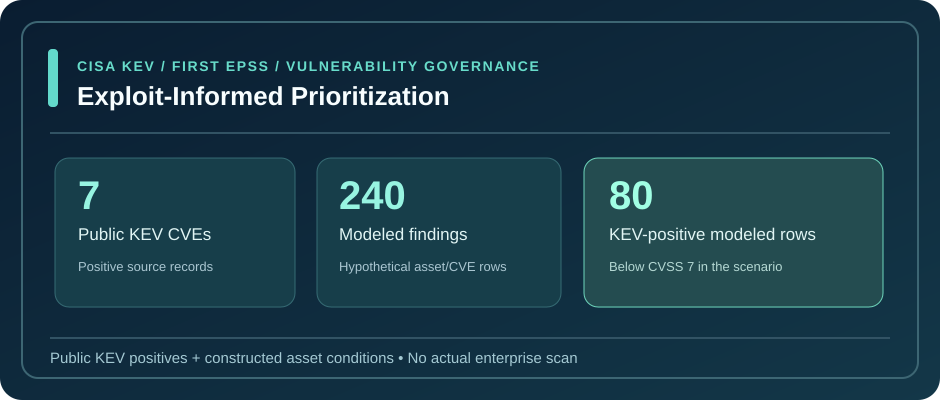

Exploitation-Aware Vulnerability Prioritization
Moving beyond severity-only queues to defensible remediation priorities.

modeled observations below CVSS 7
Selected real KEV entries; all asset/scan characteristics are modeled, not production scans.The challenge
CVSS-only remediation rules can overlook known-exploited weaknesses when their numerical severity falls below a fixed review threshold.
The approach
Built a Python pipeline for CISA KEV, optional FIRST EPSS, Qualys/Trivy imports, exposure and asset context, P0–P3 queues, due dates, decision records, and source-completeness checks.
What the evidence shows
In a deliberately modeled 240-observation comparison using seven selected real KEV-positive CVEs, 80 observations fell below the CVSS 7 threshold—illustrating where severity-only triage would miss cases.
What this informs
Use validated exploitation intelligence and asset context to prioritize follow-up, with a strict guardrail against treating partial KEV feeds as complete.
Inspect the actual work
The repository provides source code, reproducible tests, documentation and evaluation artifacts. The linked evidence report is included with this site.
Selected real KEV entries; all asset/scan characteristics are modeled, not production scans. Results are reproducible within the documented project test environment and should not be interpreted as employer operations, confirmed remediations or service-side Azure deployments.